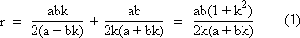
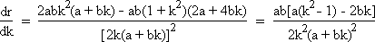
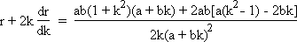

Solution to puzzle 86: Folded card
 A piece of card has the shape of a triangle, ABC, with
A piece of card has the shape of a triangle, ABC, with  BCA a right angle. It is folded once so that:
BCA a right angle. It is folded once so that:
- C coincides with C', which lies on AB; and
- the crease extends from Y on BC to X on AC.
If BC = 115 and AC = 236, find the minimum possible value of the area of  YXC'.
YXC'.
We will pursue the general case as far as is practicable.
Assign Cartesian coordinates to the vertices of the triangle: C = (0,0), B = (0,a), A = (b,0); and Y = (0,r), X = (s,0).
Let the equation of line CC' be y = kx, for some k > 0, such that Y lies on BC and X lies on AC. We will express the area of YXC' in terms of a, b, and k.
The equation of line AB is ax + by = ab.
Hence C' = (ab/(a + bk), abk/(a + bk)).
By symmetry, CM = MC', and so M = (½ab/(a + bk), ½abk/(a + bk)).
Also by symmetry, YXCC', and so the product of their gradients is -1.
Hence the equation of line YX is y = r - x/k.
To find r in terms of a, b, and k, we substitute the coordinates of M into the above equation:
Since s = kr, w = area YXC' = area YXC = ½YC·CX = ½kr2.
Differentiating w with respect to k, and using the chain rule and the product rule, dw/dk = ½(r2 + 2kr · dr/dk).
At a turning point, dw/dk = 0, and so r + 2k · dr/dk = 0.
Differentiating equation (1) with respect to k, using the quotient rule:
Hence:
Setting r + 2k · dr/dk = 0, we get (1 + k2)(a + bk) + 2a(k2 - 1) - 4bk = 0.
Hence bk3 + 3ak2 - 3bk - a = 0.
By Descartes' Sign Rule, this cubic equation has exactly one positive real root.
Substituting a = 115, b = 236, we obtain 236k3 + 345k2 - 708k - 115 = (4k - 5)(59k2 + 160k + 23) = 0. (See remarks, below.)
Hence k = 5/4 is the solution we seek.
Then, r = 115 × 236 × (1 + 25/16) / [(5/2) × (115 + (5/4)×236)] = 1357/20.
Finally, w = ½kr2 = (5/8) × (1357/20)2 = 1841449/640 = 2877.2640625.
It is easy to verify that, if C' is moved closer to B (so that X coincides with A), or if C' is moved closer to A (so that Y coincides with B), the area of YXC' exceeds the value of w, calculated above.
Since w is a continuous function, and has only one turning point for k > 0, it follows that k = 5/4 represents a minimum.
Therefore the minimum possible value of the area of  YXC' is 1841449/640 = 2877.2640625 sq. units.
YXC' is 1841449/640 = 2877.2640625 sq. units.
Remarks
An expression such as 236k3 + 345k2 - 708k - 115 cannot easily be factored by inspection! Although the general cubic equation can be solved analytically by hand (see references below), this can be quite a lengthy process. Fortunately, even if you don't own a mathematical software package, there are a number of online calculators available, such as the QuickMath Equation Solver. For a cubic equation with rational coefficients, this solver will provide exact solutions in terms of (possibly complex) radicals, as well as approximate numerical solutions.
It was noted above that the cubic equation bk3 + 3ak2 - 3bk - a = 0 has exactly one positive real root. This confirms our intuition that there can only be one turning point for the area of triangle YXC'. In fact, since the discriminant of the cubic is negative, there are three distinct real roots. When all three roots of a cubic equation are real, the formula for the roots expresses them as sums of cube roots of complex numbers. If you attempt to extract the cube roots of these complex numbers, you'll find you have to solve precisely the cubic equation you started with! This is the so-called Casus Irreducibilis; see reference 2, below. It can be shown that the roots of such a cubic equation cannot in general be expressed in terms of real radicals.
It is possible to solve this problem without recourse to Cartesian coordinates, by purely trigonometric means. Whatever approach is taken, at some point a cubic equation comparable to the one above must be solved.
The diagram above shows the minimum area of YXC', drawn to scale.
Further reading
- Cubic Equation
- The Geometry of the Cubic Formula
- How to discover for yourself the solution of the cubic
Source: When Least is Best: How Mathematicians Discovered Many Clever Ways to Make Things as Small (or as Large) as Possible, by Paul J. Nahin